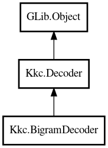

BigramDecoder
Object Hierarchy:

Description:
public class BigramDecoder :
Decoder
Content:
Properties:
Creation methods:
Methods:
- public override Segment[] decode (string input, int nbest, int[] constraint)
- public override Segment[] decode_with_costs (string input, int nbest, int[] constraint, double max_distance, double min_path_cost)
- protected void add_unknown_nodes (ArrayList<TrellisNode>[] trellis, string input, int[] constraint)
- protected ArrayList<TrellisNode>[] build_trellis (string input, int[] constraint)
- protected void forward_search (ArrayList<TrellisNode>[] trellis, string input)
- protected virtual double path_cost (TrellisNode pnode, TrellisNode node, int endpos)
- protected Segment[] backward_search (ArrayList<TrellisNode>[] trellis, int nbest, double max_distance, double min_path_cost)
Inherited Members:
All known members inherited from class Kkc.Decoder
All known members inherited from class GLib.Object
- interface_find_property
- interface_install_property
- interface_list_properties
- @new
- new_valist
- newv
- new_with_properties
- add_toggle_ref
- add_weak_pointer
- bind_property
- connect
- constructed
- disconnect
- dispose
- dup_data
- dup_qdata
- force_floating
- freeze_notify
- @get
- get_class
- get_data
- get_property
- get_qdata
- get_type
- getv
- is_floating
- notify_property
- @ref
- ref_sink
- replace_data
- replace_qdata
- remove_toggle_ref
- remove_weak_pointer
- @set
- set_data
- set_data_full
- set_property
- set_qdata
- set_qdata_full
- set_valist
- setv
- steal_data
- steal_qdata
- thaw_notify
- unref
- watch_closure
- weak_ref
- weak_unref
- notify
- ref_count